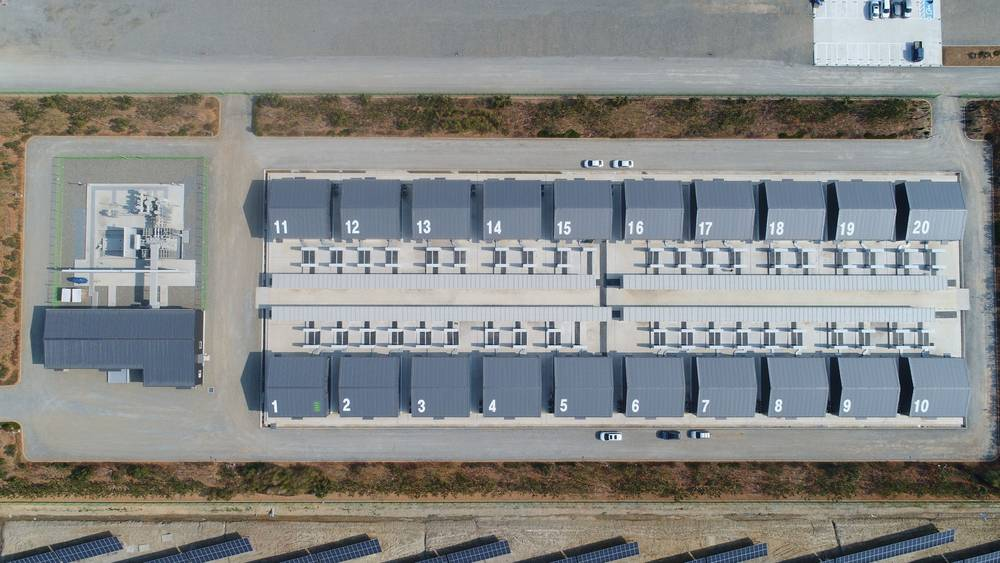

전북도, 계통 포화에 ESS·가상발전소 사업모델 찾는다…"햇빛소득마을도 접속 막혀"

LS일렉트릭 등 기업·한전 전북본부와 간담회…유연접속·선로 ESS 정책을 도내 사업과 잇는 방안 논의
전북특별자치도가 재생에너지는 늘었지만 전력망이 받아 주지 못하는 계통 포화 문제를 풀기 위해 민간기업과 에너지저장장치(ESS) 활용 사업모델 찾기에 나섰다. 도는 13일 도청에서 LS일렉트릭·티앤제이건설·세이브에너지·위에너지 등 기업과 한국전력공사 전북본부, 한국전기안전공사 전기안전연구원이 참석한 'ESS 및 전력망 연계 사업모델 발굴 간담회'를 열었다.
참석자들은 도내 계통접속을 가로막는 요인과 현장의 어려움을 나누고, ESS와 가상발전소(VPP) 같은 기술로 기존 전력망을 더 효율적으로 쓰는 방안을 논의했다. 도는 특히 햇빛소득마을을 추진하는 과정에서도 계통접속이 걸림돌로 떠올랐다고 설명했다.
정부가 최근 전력망 혁신대책에서 유연접속·자율접속, 포화 선로와 변전소의 ESS 설치를 내놓은 만큼, 이를 도내 실제 사업에 어떻게 붙일지와 초기 투자비·금융조달·전력거래 등 사업성 확보가 숙제로 남았다. 도는 기술·경제적 타당성을 검토해 실증사업과 정부 지원사업 연계를 모색하고, 송·변전설비와 ESS 확충 과제를 국가계획에 반영하도록 건의할 계획이다.
이원택 전북특별자치도지사는 계통접속 문제를 풀어야 재생에너지를 늘릴 수 있다며, 민간의 기술을 활용해 주민 부담을 줄이는 지역 맞춤형 사업모델을 찾겠다고 밝혔다.
시민에너지 관점
계통이 막히면 가장 먼저 밀려나는 것은 자본과 협상력이 약한 마을 발전소다. 독일과 영국의 지역 에너지 공동체들은 마을 단위 공동 배터리와 유연접속 계약으로 접속 대기 줄을 줄여 왔다. 기업이 ESS를 깔고 이익을 가져가는 구조만 만들면 주민은 또다시 '자리만 내주는' 쪽이 된다. 전북도는 사업모델을 설계할 때 햇빛소득마을과 에너지협동조합이 공동 ESS의 지분을 갖고 수익을 나누는 방식을 처음부터 넣어야 한다.
출처: 한국미디어뉴스 2026-11-13 이종철 원문 보기
全北道、系統飽和にESS・仮想発電所の事業モデル模索…「ヘッビッ所得村も接続できず」
LSエレクトリックなど企業・韓電全北本部と懇談会…柔軟接続・線路ESS政策を道内事業につなぐ方策を議論
全北特別自治道は、再生可能エネルギーが増える一方で電力網が受け入れきれない系統飽和の問題を解くため、民間企業とエネルギー貯蔵装置（ESS）を活用した事業モデルづくりに乗り出した。道は13日、道庁でLSエレクトリック、ティーアンドジェイ建設、セーブエナジー、ウィエナジーなどの企業と、韓国電力公社全北本部、韓国電気安全公社電気安全研究院が参加する「ESS及び電力網連携事業モデル発掘懇談会」を開いた。
参加者は道内の系統接続を妨げる要因と現場の課題を共有し、ESSや仮想発電所（VPP）などの技術で既存の電力網をより効率的に使う方策を話し合った。道は特に、ヘッビッ（日差し）所得村を進める過程でも系統接続が障害になっていると説明した。
政府が最近の電力網革新対策で柔軟接続・自律接続、飽和した線路や変電所へのESS設置を打ち出したことから、これを道内の実際の事業にどう結び付けるか、初期投資や資金調達、電力取引など事業性の確保が課題として残った。道は技術・経済的な妥当性を検討して実証事業や政府支援事業との連携を探り、送変電設備とESSの拡充課題を国家計画に反映するよう建議する方針だ。
李元澤（イ・ウォンテク）知事は、系統接続問題を解決してこそ再エネを増やせるとして、民間の技術を生かし住民負担を減らす地域に合った事業モデルを見つけると述べた。
市民エネルギーの視点
系統が詰まると真っ先に押し出されるのは、資本も交渉力も弱い村の発電所だ。ドイツや英国の地域エネルギー共同体は、村単位の共同蓄電池と柔軟接続契約で接続待ちの列を縮めてきた。企業がESSを置いて利益を持ち帰る構造だけでは、住民はまた「場所を貸すだけ」の側になる。全北道は事業モデルの設計段階から、ヘッビッ所得村やエネルギー協同組合が共同ESSの持ち分を持ち、収益を分け合う仕組みを入れるべきだ。
出典: 한국미디어뉴스 2026-11-13 이종철 原文を読む
全北道应对电网饱和，探索储能与虚拟电厂商业模式…"阳光收入村也接不上网"
与LS电气等企业及韩电全北本部座谈…讨论如何把灵活接入、线路储能政策与省内项目衔接
韩国全北特别自治道为解决可再生能源增加而电网无法消纳的饱和问题，开始与民营企业一起探索利用储能（ESS）的商业模式。该道13日在道厅召开"储能及电网衔接商业模式发掘座谈会"，LS电气、T&J建设、Save Energy、We Energy等企业以及韩国电力公社全北本部、韩国电气安全公社电气安全研究院出席。
与会者交流了省内并网受限的原因和现场困难，并讨论了利用储能和虚拟电厂（VPP）等技术更高效使用现有电网的方案。道方特别指出，在推进"阳光收入村"的过程中，并网同样成为障碍。
政府近期在电网创新对策中提出灵活接入、自主接入以及在饱和线路和变电站安装储能等措施，如何把这些政策落实到省内实际项目，以及初期投资、融资和电力交易等经济性问题仍是课题。全北道计划评估技术和经济可行性，寻求与示范项目和政府支持项目衔接，并建议将输变电设施和储能扩充纳入国家规划。
道知事李元泽表示，只有解决并网问题才能扩大可再生能源，将利用民间技术，寻找减轻居民负担、符合地方条件的商业模式。
市民能源视角
电网一堵，最先被挤出去的是缺乏资本和议价能力的村级电站。德国和英国的社区能源组织通过村级共享电池和灵活接入合同缩短了并网排队。如果只是企业安装储能、拿走收益，居民又会沦为"只出地方"的一方。全北道在设计商业模式时，应从一开始就让阳光收入村和能源合作社持有共享储能的股份并分享收益。
来源: 한국미디어뉴스 2026-11-13 이종철 查看原文
North Jeolla turns to batteries and virtual power plants as grid congestion blocks even village solar
Province meets LS Electric, other firms and KEPCO to link flexible-connection and grid-battery policies to local projects
North Jeolla Special Self-Governing Province has begun looking for business models built on energy storage systems (ESS) with private companies, as renewable capacity outpaces what the grid can absorb. On the 13th the province held a meeting at its headquarters on ESS and grid-linked business models, attended by LS Electric, T&J Construction, Save Energy and We Energy, along with KEPCO's North Jeolla division and the Electrical Safety Research Institute of the Korea Electrical Safety Corporation.
Participants shared the bottlenecks to grid connection in the province and discussed using ESS and virtual power plants (VPP) to run the existing grid more efficiently. The province noted that grid connection has also become an obstacle for its "sunlight income villages."
With the government's recent grid innovation plan introducing flexible and autonomous connection and batteries at congested lines and substations, the open questions are how to apply these to real projects in the province and how to secure viability through upfront investment, financing and power trading. The province plans to assess technical and economic feasibility, seek links with demonstration and government support programs, and ask for transmission, substation and ESS projects to be included in national plans.
Governor Lee Won-taek said renewable growth depends on solving grid connection, pledging to use private-sector technology to find locally suited models that reduce the burden on residents.
Citizen Energy View
When the grid clogs, the first to be pushed out are village plants with little capital or bargaining power. Community energy groups in Germany and the UK have shortened connection queues with shared village batteries and flexible connection agreements. If the model is simply companies installing batteries and taking the profits, residents once again end up only lending their land. North Jeolla should build in, from the design stage, a way for sunlight income villages and energy cooperatives to own shares in shared storage and split the returns.
Source: 한국미디어뉴스 2026-11-13 이종철 Read the original